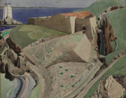
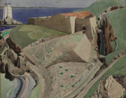

常設展覽
十九世紀
新藝術運動
新藝術運動
追朔藝術家們於館內展出的歷史典藏

新藝術風格的繪畫作品
此風格始於19世紀晚期的1880年代，發源地為英國，其形成是對過度在乎結構和理性的新古典主義風格的一種矯正，而後新藝術的傳播中心就分化為巴黎和維也納，形成兩種不同的流派，最後於20世紀早期匯聚在布拉格，在1905年前後達到頂峰。新藝術運動的名字源於薩穆爾·賓，在巴黎開設的一間名為「新藝術之家」的商店，他在那裡陳列的都是按這種風格所設計的產品，早期出售由日本進口的浮世繪風格的作品，後來轉向自己設計。第一次世界大戰後，新藝術運動中那種對美學的執著風潮不在，逐漸蛻變為實用性壓倒觀賞性的現代主義風格。
新藝術運動或新藝術風格，是一種19世紀末至20世紀中期廣泛存在於歐美的流行藝術風潮，它展現出如夢似幻的平面美學，其中的作品大多表現人性中的熱情面、樂觀面和進步面，由於這種藝術風格在美學上的高品位，導致這它被評為人類20世紀的通俗文化中所能達到的至高點。
成為會員並接收最新展覽資訊
加入會員代表性創作
追朔藝術家們於館內展出的歷史典藏
 
